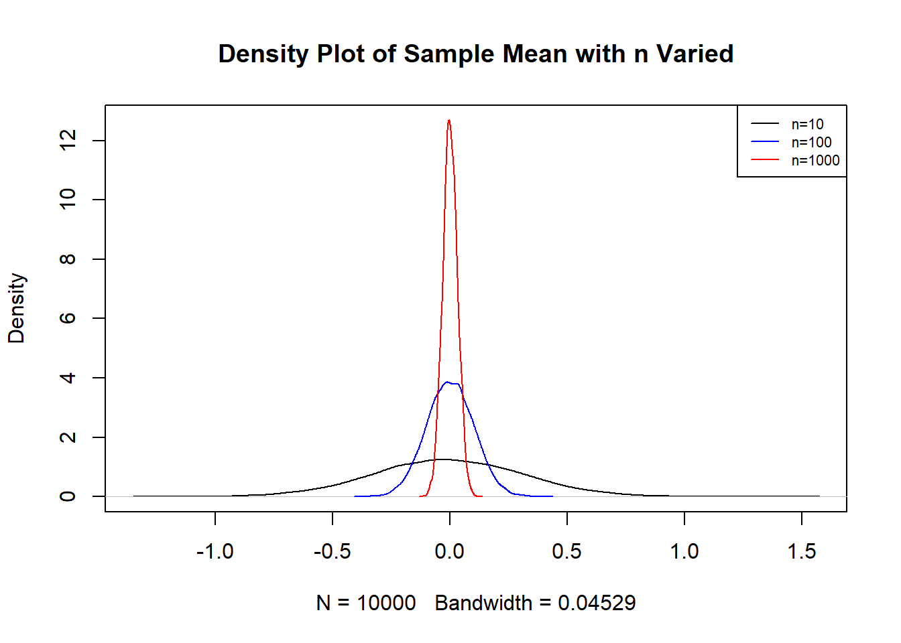
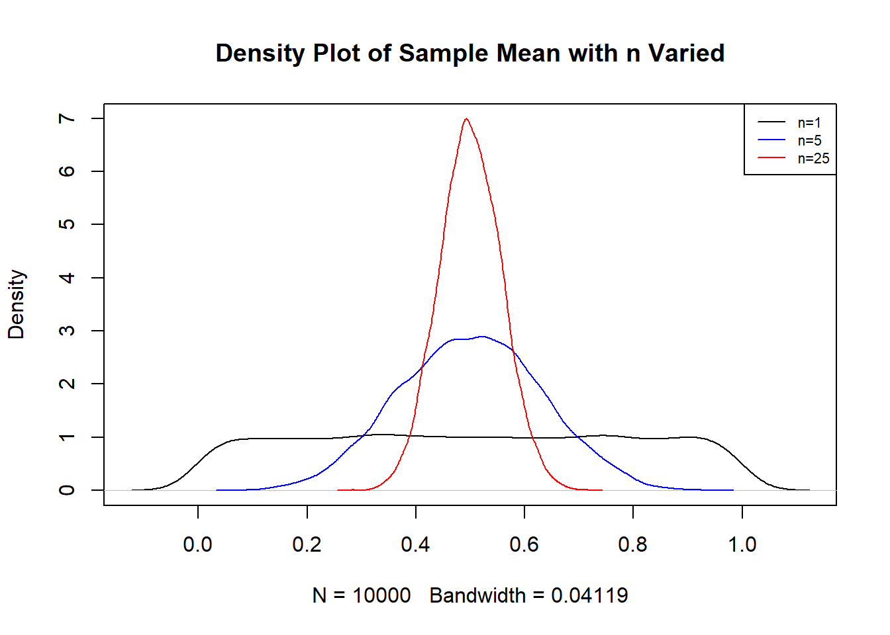
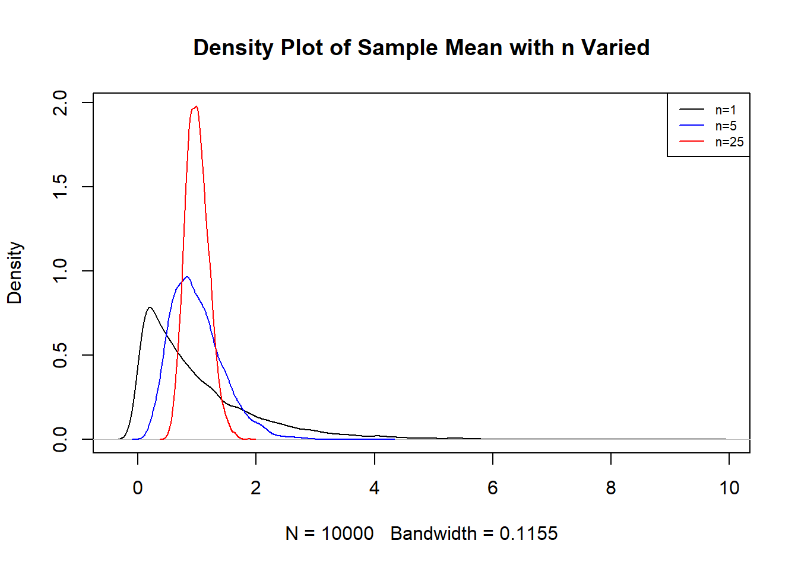

11 Sampling Distributions and the Central Limit Theorem
11.1 Key Ideas and Terms
Consider this simple scenario. We want to find the distribution associated with the systolic blood pressure of American adults. To be able to achieve this goal, we would have to get the systolic blood pressure of every single American adult. This is usually not feasible as researchers are unlikely to have the time and money to interview every single American adult. Instead, a representative sample of American adults will be obtained, for example, 750 randomly selected American adults are interviewed. We can then create density plots, histograms, compute the mean, median, variance, skewness, and other summaries that may be of interest, based on these 750 American adults.
11.1.1 Population Vs. Sample
The above scenario illustrates a few concepts and terms that are fundamental in estimation. In any study, we must be clear as to who or what is the population of interest, and who or what is the sample.
The population (sometimes called the population of interest) is the entire set of individuals, or objects, or events that a study is interested in. In the scenario described above, the population would be (all) American adults.
The sample is the set of individuals, or objects, or events which we have data on. In the scenario described above, the sample is the 750 randomly selected American adults.
In short, we are analyzing data from a sample and then try to make an inference about the population.
Ideally, the sample should be representative of the population. A representative sample is often achieved through a simple random sample, where each unit in the population has the same chance of being selected to be in the sample. In this section, we will assume that we have a representative sample. Note: You may feel that obtaining a simple random sample may be difficult. We will not get into a discussion of sampling (sometimes called survey sampling), which is a field of statistics that handles how to obtain representative samples, or how calculations should be adjusted if the sample is not representative. There is still a lot of research that is being done in survey sampling.
11.1.2 Parameter Vs Estimator
Now that we have made the distinction between a population and a sample, we are ready to define parameters and estimators.
A parameter is a numerical summary associated with a population. In the scenario described above, an example of a population parameter would be the population mean systolic blood pressure of American adults.
An estimator or a statistic is a numerical summary associated with samples. An estimator is typically used to estimate a parameter. In the scenario described above, an estimator of the population mean systolic blood pressure of American adults could be the average systolic blood pressure in our sample. So the sample mean is an estimator of the population mean.
An estimated value, or estimate, is the actual value of the estimator based on a sample. In the scenario described above, suppose the average systolic blood pressure of the 750 American adults is 140 mm Hg. We will say the estimated value of the mean systolic blood pressure of American adults is 140 mm Hg.
So a parameter is a number that is associated with a population, while an estimator is a number that is associated with a sample. Some other differences between parameters and estimators:
- The value of parameters are unknown, while we can actually calculate numerical values of estimators.
- The value of parameters are considered fixed (as there is only one population), while the numerical values of estimators can vary if we obtain multiple random samples of the same sample size. Using the scenario above again, suppose we obtain a second representative sample of 750 American adults. The average systolic blood pressure of this second sample is likely to be different from the average systolic blood pressure of the first sample. This illustrates that there is variance associated with estimators due to random sampling.
11.1.3 Sampling Distributions
Now imagine that we keep obtaining representative samples of 750 American adults. We calculate the average systolic blood pressure from each sample. They are all different? We can then create a histogram or density plot (since the averages are numeric) to visualize the distribution of the sample means. Are they all close to each other? Or they spread out? Is the distribution bell-shaped or skewed?
The distribution associated with a statistic (from the same sample size) is called its sampling distribution. A sampling distribution is the probability distribution of a given statistic (like a mean or proportion) calculated from multiple random samples of the same size taken from a larger population. Some statistics have known sampling distributions (under certain conditions):
- The sample mean, \(\bar{X}\).
- The sample proportion , \(\hat{p}\).
The sampling distributions of the statistics \(\bar{X}\) and \(\hat{p}\) have been proven mathematically. However, what happens when the “certain conditions” are not met, or if the statistic has no known sampling distribution? We can use simulations in these instances! We have seen an example in Section 6.4.1, where we used a simulation to derive the sampling distribution of the sample mean.
It turns out we can use simulations to also estimate expected values and probabilities. When using simulations in these settings, the simulations are called Monte Carlo simulations. Monte Carlo simulations work because of the Law of Large Numbers, which we briefly describe next.
11.1.4 Law of Large Numbers
The Law of Large Numbers (LLN) states that as \(n\) gets larger and approaches infinity, the sample mean \(\bar{X}_n = \frac{X_1 + \cdots + X_n}{n}\) converges to the true mean (or expected value) \(\mu\). This implies that the sample mean tends to get closer to the population mean with larger sample sizes. The key word here is tends to, it is not a guarantee that the sample mean always gets closer to the population mean whenever \(n\) gets larger, but it generally does. This explains why we tend to trust results from larger sample sizes.
We use an example to illustrate the LLN, which comes from flipping a fair coin. Let \(X\) denote whether the coin lands heads or tails, and let \(X=1\) for heads and \(X=0\) for tails. We can say that \(X \sim Bern(0.5)\) since the coin is fair. Imagine flipping the coin \(n\) times, and record the outcome after each flip, so \(X_1, \cdots, X_n\) denote the outcome of each flip. We know that \(E(X) = 0.5\) since \(X \sim Bern(0.5)\). The LLN informs us that \(\bar{X}_1, \cdots, \bar{X}_n\) should usually get closer to 0.5 as \(n\) increases. In other words, the value of the sample proportion after each flip should usually get closer to 0.5 with more flips. The code below simulates this example for \(n=500\), and Figure 11.1 shows how the sample proportions get closer to 0.5, in general, as \(n\) increases.
n<-500 ##make this big, but not too big otherwise picture is difficult to see
set.seed(23)
X<-rbinom(n,1,0.5) ##simulate 500 flips of fair coin
totals<-cumsum(X) ##count total number of heads after each flip
index<-1:n
props<-totals/index ##find proportion of heads after each flip
##create visual. LLN says that as n gets larger, the value of the sample proportion tends to get closer to 0.5
plot(props, type="l", main="Prop vs Sample Size", ylab="Proportion", xlab="n")
abline(h=0.5, col="blue") ##overlay 0.5 for easy comparison
Figure 11.1: LLN Example with Coin Flips
Note: The LLN actually comes in two versions, the Weak Law of Large Numbers (WLLN), and the Strong Law of Large Numbers (SLLN). What I have written gives an intuitive explanation of what the LLN implies.
11.1.4.1 Misconceptions with LLN
One key idea with the LLN is that the sample mean tends to get closer to the true mean as \(n\) gets larger. The key words here are “tends” and “as \(n\) gets larger”.
A misunderstanding of the LLN is the gambler’s fallacy, which erroneously believes that the sample mean must “self correct” and get closer to the population mean with small increments of \(n\).
Using the example from flipping a fair coin. The gambler’s fallacy erroneously thinks that:
- The proportion of heads should be close to 0.5, even with small \(n\).
- The results of subsequent flips should self correct, i.e. the proportion of heads get closer to 0.5 with the next flip. For example, if the first 5 flips are heads, the next flip is “due” to be tails since the proportion should get closer to 0.5 with the next flip.
The convergence to 0.5 comes from flipping the coin many times.
11.2 Monte Carlo Simulations
The idea behind Monte Carlo simulations is to use repeated random sampling (and by repeated, we mean repeated a large number of times) to estimate features of data based on expected values. Monte Carlo simulations are used for the following purposes:
When the probability or expectation is too complicated to work out by hand. Recall that finding probabilities and expectations by hand involve summations or integrals, and it becomes obvious that working with summations and especially integrals can get onerous.
To verify theoretical results involving probability or expectations. While a lot of theory is proved using mathematics, most academic papers include Monte Carlo simulations to verify the theoretical results. We have done these to verify the Central Limit Theorem in Section 6.4.1.
To help confirm that you understand the meaning of theoretical results. The only way your code matches the theory is if you understand the theory.
The Law of Large Numbers (LLN) provides the mathematical backbone for Monte Carlo Simulations. LLN guarantees that as you repeat an experiment or random trial more times, your average result tends to get closer to the true expected value.
11.2.1 Monte Carlo Methods for Expected Values
Suppose we want to find some expectation for a continuous random variable \(X\), \(E(g(X))\), where \(g\) is some function, i.e. \(E(g(X)) = \int_{-\infty}^{\infty} g(x) f_X(x).\) Monte Carlo methods avoid doing this integration by simulating \(X_1, \cdots, X_M\) from \(X\) and estimate \(E(g(X))\) with the sample mean of \(g(X)\), \(\frac{1}{M} \sum_{i=1}^M g(X_i)\). The LLN tells us that as \(M\) gets larger, this sample mean converges to \(E(g(X))\).
Monte Carlo methods replace the integral (or summation) with simulating a random variable repeatedly many times. We use a simple example to illustrate this idea.
Let \(X\) be a standard normal distribution. Suppose we want to find the value of \(E(X^2) = \int_{-\infty}^{\infty} x^2 \frac{1}{\sqrt{2 \pi}} e^{-x^2/2} dx\). Instead of working out this integral by hand, we carry out a Monte Carlo simulation by doing these steps:
- Simulate \(M\) random values from a standard normal, where \(M\) is large.
- Calculate \(X_1^2, \cdots, X_M^2\).
- Find the sample average of \(X_1^2, \cdots, X_M^2\).
set.seed(5)
reps<-10000 ## this is M
Xs<-rnorm(reps) ##generate M values of X
squared.values<-Xs^2 ##square each X
mean(squared.values) ##sample average of squared values. ## [1] 1.024546
##when reps is large, this sample mean should be close to the true E(X^2), which is 1Since \(X\) is standard normal, we know \(E(X) = 0\) and \(Var(X) = E(X^2) - E(X)^2 = E(X^2) = 1\). We see in our simulation that our estimated value for \(E(X^2)\) is pretty close to its theoretical value.
11.2.2 Monte Carlo Methods for Probabilities
Suppose we want to find the probability that a random variable satisfies some event \(E\), \(P(E)\). We could perform a summation or integral to find this probability, or estimate the probability using Monte Carlo simulations. What we will do is simulate \(X_1, \cdots, X_M\) from \(X\), where \(M\) is large, in other words, simulate a large number of replicates of \(X\). We then count how many of the \(X_i\)s correspond to event \(E\) happening, and then divide this number by \(M\), the number of replicates. This proportion can also be viewed as the average number of times event \(E\) happens, if we encode the event \(E\) happening as 1 and the event \(E\) does not happen as 0. We use an example to illustrate this idea.
Let \(X\) be a standard normal distribution. Suppose we want to find the probability \(P(X^2 > 1)\). We carry out a Monte Carlo simulation by doing these steps:
- Simulate \(M\) random values from a standard normal, where \(M\) is large.
- Calculate \(X_1^2, \cdots, X_M^2\).
- Count the number of times \(X_i^2\) is greater than 1.
- Divide this number by \(M\) to estimate the probability, since probability can be interpreted as a long-run proportion.
set.seed(5)
reps<-10000 ## this is M
Xs<-rnorm(reps) ##generate M values of X
squared.values<-Xs^2 ##square each X
sum(squared.values>1)/reps ##count the number of times X^2 is greater than 1, and divide by M## [1] 0.3178
##alternatively, same result as previous line
mean(squared.values>1)## [1] 0.3178
##when reps is large, this proportion should be close to
1-pchisq(1, df=1)## [1] 0.3173105
##it turns out that squaring a standard normal gives a chi-squared distribution with 1 df.We see the estimated probability \(P(X^2 > 1)\) is close to its theoretical probability.
Why do Monte Carlo simulations work with probabilities? The probability from the Monte carlo simulation finds the proportion of times a certain condition is met, which is the same as finding the average of the 1s (when condition is met) and 0s (when condition is not met), so the proportion is equivalent to a mean. So our results are backed by the LLN.
11.3 Sampling Distribution of the Sample Mean
We will state the sampling distribution of the sample mean, \(\bar{X}_n\). Let \(X_1, \cdots, X_n\) be i.i.d. from a normal distribution with finite mean \(\mu\) and finite variance \(\sigma^2\). Then \(\bar{X}_n = \frac{X_1 + \cdots + X_n}{n} \sim N(\mu, \frac{\sigma^2}{n})\).
This implies that if the data are originally normally distributed, the sample mean will also be normally distributed, regardless of the sample size.
For example, if the data are i.i.d. standard normal, the sample means follow a normal distribution:
- When \(n=10\), \(\bar{X}_n \sim N(0, \frac{1}{10}) = N(0, 0.1)\).
- When \(n=100\), \(\bar{X}_n \sim N(0, \frac{1}{100}) = N(0,0.01)\).
- When \(n=1000\), \(\bar{X}_n \sim N(0, \frac{1}{1000}) = N(0,0.001)\).
We see that when the sample size gets larger, the variance of the sample mean decreases, so there is less spread and their resulting density plot is more concentrated around the mean.
We can run the following Monte Carlo simulation to display the sampling distributions of the sample means when the data are i.i.d. standard normal when \(n=10, 100, 100\) in Figure 11.2 below (this simulation is similar to what was done in Section 6.4.1):
##function to find sample mean of data from standard normal
sampMean <- function(number){
mean(rnorm(number))
}
Reps <- 10000
##find the sample means of n data points, with 10000 replicates
repSampMean <- function(number){
return(replicate(Reps, sampMean(number)))
}
##find the sample means when n = 10, 100, 1000 with 10000 replicates each
results <- sapply(c(10, 100, 1000), repSampMean)
##visualize the sampling distributions of the sample means when n=10, 100, 1000
##set the max limit of the y axis
max_y1 <- max(density(results[,1])$y, density(results[,2])$y, density(results[,3])$y)
##n = 10
plot(density(results[,1]), ylim=c(0, max_y1), main="Density Plot of Sample Mean with n Varied")
##n = 100
lines(density(results[,2]), col="blue")
##n = 1000
lines(density(results[,3]), col="red")
legend("topright", legend = c("n=10", "n=100", "n=1000"), col = c("black","blue", "red"), lty = 1, cex=0.7)
Figure 11.2: Sampling Distribution of Sample Mean when Data are Standard Normal with n = 10, 100, 1000
From Figure 11.2, we can see that as \(n\) gets larger, the distribution of the sample mean has less variance and the resulting density plot is more concentrated around the mean.
We can also find the average of the sample means when \(n = 10, 100, 1000\), which should be 0 theoretically:
apply(results, 2, mean)## [1] -0.0088640968 -0.0002700293 0.0004294338
##close to 0As well as the variance of the sample means when \(n = 10, 100, 1000\), which should be 0.1, 0.01, and 0.001 respectively:
apply(results, 2, var)## [1] 0.100813295 0.009996330 0.001000144Thought question: How would you use this simulation to estimate the probability \(P(\bar{X} > 0.5)\) when \(n=10\) and the data \(X_1, \cdots, X_n\) are i.i.d. standard normal? Compare the answer from the simulation with the answer based on the known sampling distribution of the sample mean.
11.4 Central Limit Theorem
The previous subsection writes about the sampling distribution of the sample means when the data were i.i.d. normal. However, normal data rarely happens in real life. So is the sampling distribution of the sample mean useless? It turns out that under some conditions, the result is still applicable.
Let \(X_1, \cdots, X_n\) be i.i.d. from a distribution with finite mean \(\mu\) and finite variance \(\sigma^2\). The Central Limit Theorem (CLT) states that as the sample size \(n\) gets larger and tends to infinity, \(\bar{X}_n = \frac{X_1 + \cdots + X_n}{n}\) is approximately \(N(\mu, \frac{\sigma^2}{n})\).
An implication of the CLT is that even if our data do not follow a normal distribution, the average value of the data can be approximated by a normal distribution, as long as our sample size is large enough, and if the data are independent and all follow the same distribution. This is useful since a lot of research questions deal with averages, and we do not need the data to be normal as long as our sample size is large enough (e.g. do average test scores improve after the implementation of a new program?).
The question then becomes: how large does the sample size \(n\) have to be for the approximation to work? Most books will say at least 25, or 30. It turns out that the skewness (or asymmetry) of the data plays a role:
- If the data are symmetric (but not normal), a smaller sample size may be enough.
- The more skewed (or asymmetric) the data, a larger sample size may be needed.
11.4.1 Example 1: Data are Uniform
In this example, we do the following:
- Simulate \(n\) observations from a standard uniform distribution.
- Calculate the sample mean.
- The previous two steps are repeated for 10,000 replicates.
- We set \(n = 1, 5, 25\).
- We then plot the sampling distributions of the sample mean for each sample size. The plots are shown in Fig 11.3 below.
sampMean_Unif <- function(number){
mean(runif(number))
}
Reps <- 10000
##find the sample means of n data points, with 10000 replicates
repSampMean_Unif <- function(number){
return(replicate(Reps, sampMean_Unif(number)))
}
results_Unif <- sapply(c(1, 5, 25), repSampMean_Unif)
##set the max limit of the y axis
max_y1 <- max(density(results_Unif[,1])$y, density(results_Unif[,2])$y, density(results_Unif[,3])$y)
##n = 1
plot(density(results_Unif[,1]), ylim=c(0, max_y1), main="Density Plot of Sample Mean with n Varied")
##n = 5
lines(density(results_Unif[,2]), col="blue")
##n = 25
lines(density(results_Unif[,3]), col="red")
legend("topright", legend = c("n=1", "n=5", "n=25"), col = c("black","blue", "red"), lty = 1, cex=0.7)
Figure 11.3: Sampling Distribution of Sample Mean when Data are Standard Uniform with n = 1, 5, 25
From Figure 11.3, we can see that when \(n=1\), the distribution of the sample means is not normal. This is expected since this is just the distribution of the standard uniform. However, notice that when \(n=5\), the distribution already looks approximately normal. We did not need as large a sample size as 25 for the CLT to kick in.
11.4.2 Example 2: Data are Skewed
In this example, we do the following:
- Simulate \(n\) observations from an exponential distribution with rate parameter 1. This is known to be a skewed distribution.
- Calculate the sample mean.
- The previous two steps are repeated for 10,000 replicates.
- We set \(n = 1, 5, 25\).
- We then plot the sampling distributions of the sample mean for each sample size. The plots are shown in Fig 11.4 below.
sampMean_E <- function(number){
mean(rexp(number, rate = 1))
}
Reps <- 10000
repSampMean_E <- function(number){
return(replicate(Reps, sampMean_E(number)))
}
results_E <- sapply(c(1, 5, 25), repSampMean_E)
max_y1 <- max(density(results_E[,1])$y, density(results_E[,2])$y, density(results_E[,3])$y)
plot(density(results_E[,1]), ylim=c(0, max_y1), main="Density Plot of Sample Mean with n Varied")
lines(density(results_E[,2]), col="blue")
lines(density(results_E[,3]), col="red")
legend("topright", legend = c("n=1", "n=5", "n=25"), col = c("black","blue", "red"), lty = 1, cex=0.7)
Figure 11.4: Sampling Distribution of Sample Mean when Data are Exp(1) with n = 1, 5, 25
From Figure 11.4, we can see that when \(n=5\), the distribution of the sample means when the data is exponential (skewed) is not normal. This was unlike the distribution of the sample means when the data were uniform. Although at \(n=25\), the distribution is approximately normal.
Thought question: How would you use this simulation to estimate the probability \(P(\bar{X} > 1.2)\) when \(n=25\) and the data \(X_1, \cdots, X_n\) are i.i.d. exponential with rate parameter 1? Compare the answer from the simulation with the answer based on the CLT.
Thought question: How would you use this simulation to estimate the probability \(P(\bar{X} > 1.2)\) when \(n=5\) and the data \(X_1, \cdots, X_n\) are i.i.d. exponential with rate parameter 1? Explain why we cannot calculate an answer based on the CLT.
11.5 Sampling Distribution of the Sample Proportion
Thus far, we’ve talked about the distribution of the sample mean (for example, the mean systolic blood pressure of American adults). The variable of interest, the blood pressure of American adults, is quantitative. What if the variable of interest is binary (categorical with two outcomes)? The parameter and statistic of interest is usually the population proportion and sample proportion.
Suppose we know that the proportion of American adults who support a particular candidate is \(p = 0.55\), which is our parameter of interest. If we were to take a poll of 1,000 American adults on this topic, the estimate would not be perfectly equal to 0.55, but how close to 0.55 might we expect the sample proportion to be? We want to understand how the sample proportion, \(\hat{p}\), behaves when the true population proportion is 0.55. We can simulate responses we would get from a simple random sample of 1,000 American adults, which is only possible because we know the actual support for the candidate is 0.55.
It turns out the CLT can also be applied to the sampling distribution of the sample proportions, since \(\hat{p}\) can be viewed as the average of the outcomes, if a supporter is encoded as 1 and a non supporter is encoded as 0.
When the data are independent, and if the sample size is large enough, the sampling distribution of the sample proportions is approximately \(N(p, \frac{p(1-p)}{n})\).
Most books will write that the sample size is large enough if \(np \geq 10\) and \(n(10-p) \geq 10\). Some books will say 5 instead of 10. The approximation to the normal distribution gets better as \(np\) and \(n(1-p)\) get larger.
Thought question: Is there a contextual meaning behind the values of \(np\) and \(n(1-p)\)?
11.6 Other Common Sampling Distributions
Before listing a couple of other common sampling distributions, we state a couple of theoretical results involving expected values and variances.
Let \(X\) and \(Y\) denote random variables, and \(a,b,c\) denote some constants, then
\[\begin{equation} E(aX + bY + c) = aE(X) + bE(Y) + c. \tag{11.1} \end{equation}\]
If \(X\) and \(Y\) are independent random variables, then
\[\begin{equation} Var(aX + bY + c) = a^2 Var(X) + b^2 Var(Y). \tag{11.2} \end{equation}\]
We also state another theorem:
Theorem 11.1 (Linear Combination of Independent Normals) Let \(X\) and \(Y\) denote independent normal random variables. Any linear combination of \(X\) and \(Y\) is normal, i.e. aX + bY is normal with \(a, b\) denoting constants.
11.6.1 Sampling Distirbution for Difference in Two Independent Sample Means
Suppose we want to investigate the difference in the average systolic blood pressure between female and male American adults. Suppose the systolic blood pressure for females has population mean \(\mu_X\) and population variance \(\sigma^2_X\) and the systolic blood pressure for males has population mean \(\mu_Y\) and population variance \(\sigma^2_Y\).
The population parameter is \(\mu_X - \mu_Y\) and the statistic is \(\bar{X} - \bar{Y}\), where \(X\) and \(Y\) denote the systolic blood pressures of female and male American adults respectively.
Under certain conditions, the sampling distribution of \(\bar{X} - \bar{Y}\) is (approximately) \(N(\bar{X} - \bar{Y}, \frac{\sigma^2_X}{n_X} + \frac{\sigma^2_Y}{n_Y})\), where \(n_X\) and \(n_Y\) denote the sample sizes of female and male American adults.
Thought Question: How would you use equations (11.1) and (11.2) and theorem 11.1 to explain this sampling distribution?
11.6.2 Sampling Distirbution for Difference in Two Independent Sample Proportions
Suppose we want to investigate the difference in the proportion of female and male voters who support a candidate. Suppose the population proportion of females who support is \(p_X\) and the population proportion of males who support is \(p_Y\).
The population parameter is \(p_X - p_Y\) and the statistic is \(\hat{p}_X - \hat{p}_Y\).
Under certain conditions, the sampling distribution of \(\hat{p}_X - \hat{p}_Y\) is (approximately) \(N(\hat{p}_X - \hat{p}_Y, \frac{p_X(1-p_X)}{n_X} + \frac{p_Y(1-p_Y)}{n_Y})\), where \(n_X\) and \(n_Y\) denote the sample sizes of female and male voters.
Thought Question: How would you use equations (11.1) and (11.2) and theorem 11.1 to explain this sampling distribution?
11.7 Sampling Distribution of Other Statistics
So far, we have talked about the sampling distributions of
- the sample mean (Section 11.3)
- the sample proportion (Section 11.5)
- the difference in two independent sample means (Section 11.6.1)
- the difference in two independent sample proportions (Section 11.6.2)
For these statistics, we know their distributions, or approximate distributions, under certain conditions. We can peform probability calculations associated with these statistics without using Monte Carlo simulations.
However, you may encounter a situation where you need to estimate the sampling distribution of a statistic which has no known mathematical. We saw an example in Section 11.4.2, where we needed the sampling distribution of the sample when the data are i.i.d. exponential with rate parameter 1, and when \(n=5\). The CLT does not apply in this situation so the sampling distribution of the sample mean should not be approximated by a normal distribution. However, we can still estimate probabilities using a Monte Carlo simulation as shown in Section 11.4.2.